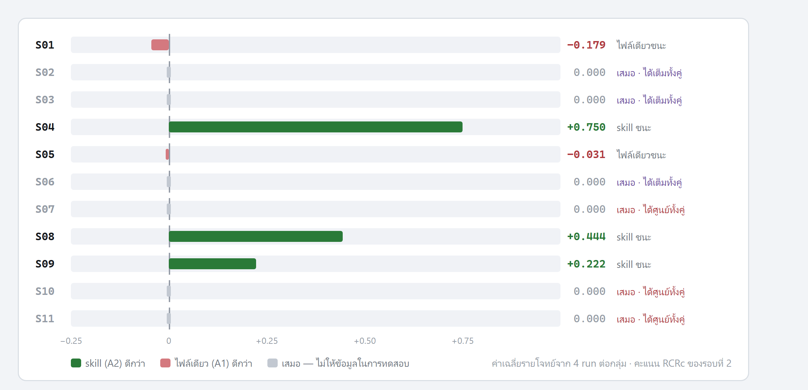
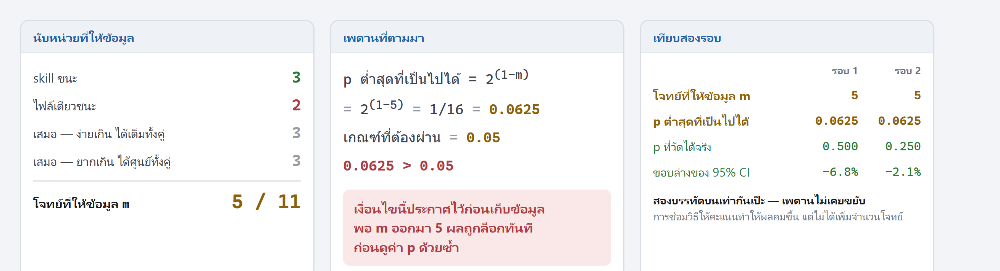

ความก้าวหน้าตั้งแต่ 14 สิงหาคม 2569 · บอกไว้ vs เกิดขึ้นจริง
| รอบที่แล้วบอกไว้ | เกิดขึ้นจริง |
|---|
| ข้อมูล | 64 run · ยังไม่เปรียบเทียบ | 396 run · เปรียบเทียบครบ |
| ค่าใช้จ่าย | $72 | $287 |
| แผนรัน | 9 รอบต่อโจทย์ · 495 run |
ประกาศจริง 6 รอบ · เก็บได้ 4 รอบ เพราะชนโควตา
ใช้กฎสำรองที่ประกาศล่วงหน้า — ตัดรอบเท่ากันทุกกลุ่ม ไม่ทิ้งกลุ่มไหน |
| โมเดล | ยังไม่ล็อก | claude-sonnet-5 |
| จำนวนชุดทดลอง | ชุดเดียว | ทำรอบที่ 2 เพิ่ม |
| กลุ่มทดลอง | 5 กลุ่ม | รอบ 2 เหลือ 4 กลุ่ม · เพิ่ม A5 |
| H3 rule dilution | วางไว้ 150 run | ไม่ได้เก็บ |
แถวที่ไฮไลต์คือสิ่งที่ไม่เป็นไปตามแผน · ที่เหลือเป็นไปตามที่บอกไว้หรือดีกว่า
1
ทำไมต้องมีรอบที่สอง · แผนที่ run ทั้งหมด
ซ้ายคือวิธีให้คะแนนเดิม มีแค่สองสี ผ่านครบ หรือ ศูนย์ — โจทย์ส่วนใหญ่เลยได้เท่ากันทั้งสองกลุ่ม
ขวาคือรอบที่ 2 ให้คะแนนเป็นสัดส่วน — เฉดที่เพิ่มมามีแค่ 34 จาก 176 run อีก 142 ยังเป็น 0 หรือ 1 เป๊ะ
· พอให้ p ขยับจาก 0.500 เป็น 0.250 แต่ m ยังเท่าเดิมที่ 5
2
ผลการเปรียบเทียบ · skill นำทั้งสองรอบ
| วิธีให้คะแนน | skill |
ไฟล์เดียว | ต่างกัน | ช่วงความเชื่อมั่น 95% | p |
|---|
| รอบ 1 | CRIT | 36.4% | 27.3% |
+9.1 | −6.8 ถึง +27.3 | 0.500 |
| รอบ 2 | RCRc | 61.5% | 50.5% |
+11.0 | −2.1 ถึง +27.5 | 0.250 |
สองรอบให้คะแนนคนละแบบ ตัวเลขข้ามแถวเทียบกันไม่ได้ — ดูได้เฉพาะคอลัมน์ “ต่างกัน”
ช่วงความเชื่อมั่นคร่อมศูนย์ทั้งคู่ → สรุปไม่ได้ ไม่ใช่ไม่ต่างกัน
คู่รอง A5 เทียบ A2 — ข้อความชุดเดียวกัน ต่างแค่โหลดตลอด vs โหลดตามเงื่อนไข =
−8.8 จุด · CI −25.8 ถึง +5.5 · p = 0.4375 · ประตูไม่เปิด เพราะคู่หลักไม่มีนัยสำคัญ อ้างไม่ได้
3
ต้นตอมีข้อเดียว · ความเสี่ยงที่รายงานไว้เมื่อ 14 ส.ค. เกิดขึ้นจริง


โจทย์ 11 ข้อ · เสมอ 6 ข้อ · เหลือให้ข้อมูลแค่ 5 → เพดาน p ที่เป็นไปได้คือ 0.0625 ซึ่งสูงกว่าเกณฑ์ 0.05
เงื่อนไขนี้ประกาศไว้ก่อนเก็บข้อมูลว่า ถ้า m ต่ำกว่า 6 นัยสำคัญจะเป็นไปไม่ได้
พอ m ออกมา 5 ผลถูกล็อกทันที ก่อนดูค่า p ด้วยซ้ำ · รอบ 1 กับรอบ 2 ติดเพดานเดียวกันเป๊ะ
4
ของใหม่ที่ไม่ได้อยู่ในแผน · กฎทำให้ AI ไปเช็คผลกระทบจริง
กลุ่มที่ไม่มีกฎ ไม่เคยรันเช็คเลยแม้แต่ครั้งเดียว 0 จาก 8 · กลุ่มที่มีกฎทำ 19 จาก 24
เป็นข้อสังเกต ไม่ใช่ข้อสรุป — ยังไม่ได้ทดสอบทางสถิติ และไม่ได้ประกาศไว้ล่วงหน้า
5
ของใหม่ที่ไม่ได้อยู่ในแผน · กฎซื้อความมีวินัย ด้วยราคาคืองานที่เสร็จน้อยลง
กลุ่มไม่มีกฎ ทำงานสำเร็จมากที่สุด 75% แต่ตามกฎแย่ที่สุด · สามกลุ่มที่มีกฎตามกฎได้ 0.967 เท่ากัน
เมื่อปัดทศนิยม ตัวจริงคือ 0.9669 · 0.9666 · 0.9665 ต่างกันที่หลักที่สี่
เป็นข้อสังเกต ไม่ใช่ข้อสรุป — A0 ถูกประกาศไว้ว่าเป็นกลุ่มเชิงพรรณนา
6
คุมตัวแปรยังไง · สองอย่างที่ตรวจจับได้จริง ไม่ใช่เขียนไว้เฉย ๆ
| กลไก | เกิดอะไรขึ้น |
|---|
| ดักการเขียนหน่วยความจำถาวร
19 ก.ย. · run S07-weekly-quota__A1__r3 |
เอเจนต์กลุ่ม A1 เขียนไฟล์ นอกโฟลเดอร์ทดลอง — ในไฟล์มีทั้งสรุปกฎของกลุ่มตัวเอง
และเฉลยของ S07 ซึ่งเป็นโจทย์ที่ไม่มีใครทำสำเร็จเลย
จับได้ทันทีที่ run จบ · หยุดทั้งชุด · run ถูกปฏิเสธ · ไม่มี run ถัดไปได้อ่าน หลักฐานเก็บครบที่ evidence/memory-contamination-2026-09-19/ |
| ตรวจว่า skill โหลดถูกจังหวะไหม
trigger F1 ของ A2 · ชุดที่ 2 |
trace-to-requirement 1.000 · acceptance-first 0.842
· impact-analysis 0.872
ชุด sensitivity ของ Amendment 16 ให้ impact-analysis 0.593 — ต้องรายงานคู่กันเสมอ |
กลไกส่งกฎทำงานถูกจังหวะ แต่ผลปลายทางไม่ขยับ → ปัญหาไม่ได้อยู่ที่การส่งกฎ
และต้องพูดตรง ๆ ว่า กลไกจับได้เพราะมีคนเผื่อไว้ล่วงหน้า — เราไม่รู้ว่ายังมีช่องแบบเดียวกันที่ยังไม่มีใครนึกถึงอีกกี่ช่อง
7
ยอมรับตรงไปตรงมา
รอบที่แล้วผมรายงานอาจารย์เองว่า
“ทางออกคือเพิ่มจำนวนโจทย์ ไม่ใช่เพิ่มรอบ”
แต่ตอนออกแบบรอบที่ 2 ผมใช้โจทย์ 11 ข้อเดิม ไม่ได้เพิ่ม
ทั้งที่จังหวะนั้นเพิ่มได้ ไม่ผิดหลักอะไรเลย เพราะเป็นชุดข้อมูลใหม่ทั้งชุด → รอบสองไปติดเพดานเดิม
บันทึกไว้ในบทข้อจำกัดแล้ว และเป็นข้อเสนอแนะอันดับหนึ่งสำหรับงานต่อยอด
8
เหลืออะไร และทันไหม
| เก็บข้อมูล | จบแล้ว ไม่ต้องเก็บเพิ่ม |
| บทที่ 1 ถึง 7 | ร่างครบแล้ว |
| บทคัดย่อ · Abstract · สารบัญ | เสร็จแล้ว |
| ตรวจเอกสารอ้างอิง — ติดธงไว้ 4 จุด แต่ต้องอ่านต้นฉบับครบ 12 รายการ |
ยังไม่ได้ตรวจ — ผู้วิจัยต้องเปิดเปเปอร์เอง ≈ 1 วัน |
| ประกอบเล่มลง template ของคณะ + สารบัญตาราง 65 ตาราง |
ยังไม่ทำ ≈ 2–3 วัน |
| ทำสไลด์ฉบับสมบูรณ์สำหรับสอบป้องกัน |
ยังไม่ทำ ≈ 2 วัน |
ที่เหลือเป็นงานเรียบเรียง ไม่ใช่งานวิจัยแล้ว · สามแถวล่างรวมกัน ราว 5–6 วันทำงาน
กำหนดส่งเล่มจริงวันไหนครับ — ขอเช็คให้ตรงกัน
9